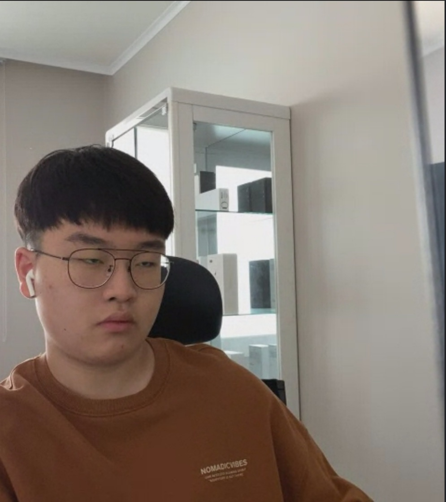

김태은의 얼굴 목차에 들어온걸 개인적으로 환영하진 않는다. 안구건강에 좋을 짓은 안되기 때문에 보고싶지 않으면 다이어트 부터 보고 오는걸 추천한다. 미리 알려주지만 사진을 보면서 웃을수도 있고 표정이 안좋아질 수도 있다. 개인적으로 내 표정은 아래 사진을 참고하면 될 것 같다.
첫번째 사진은 그의 두꺼비 짤이다. 개인적으로 두꺼비 같이 나와서 내가 지은 이름이지만 ^___^
두번째 사진은 영정사진후보이다. 개인적으로 이 사진은 김태은이 갑자기 너무 불행히도 어떤 일이 생겼을때 쓰기 좋을거같다고 생각하기 때문.
세번째 사진은 김태은이 행복한 표정을 짓는 사진이다. 뭘 보고 행복한지는 잘 모르겠지만 좀 재수없다.
네번째 사진은 김태은이 정색한 사진이다. 온클하면서 열심히 피파를 하는 중이라 그런지 수업에 집중을 안하면서 자기 나름대로 포커페이스를 유지했다고 생각하는가보다.
여러 사진을 보여줬지만 이보다 더 좋은 사진들도 많다 혹시 김태은과 연락하고 싶다면 인스타그램 아이디 : kimten_0226 검색해서 연락하길 바란다. (개인적으로 비추)